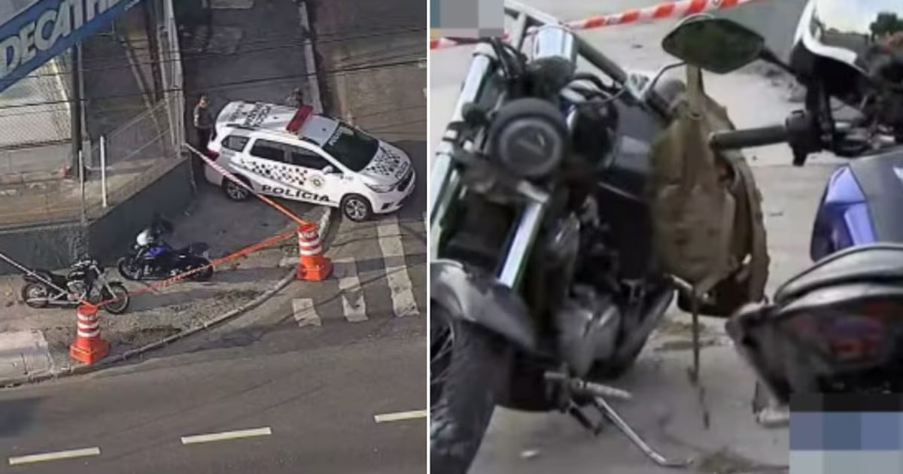

PM à paisana morre após ser baleado em assalto na Zona Oeste de SP
01/11/2024 por Fernanda Borges
Um policial militar que estava à paisana morreu após ser baleado em um assalto, na madrugada desta sexta-feira (1), na Marginal Tietê, região da Barra Funda, na Zona Oeste de São Paulo. A vítima seguia em uma motocicleta com outro policial, que também não usava farda, quando eles foram abordados pelos criminosos. Houve disparos de arma de fogo e o agente acabou atingido, sendo que o colega não se feriu.
De acordo com a Secretaria de Segurança Pública de São Paulo (SSP-SP), o PM baleado foi socorrido e levado ao Pronto Socorro do São Camilo, na Pompéia, mas não resistiu aos ferimentos e morreu. Já o policial que estava com ele escapou ileso.
Os criminosos, que também estavam em uma motocicleta, fugiram após o crime e ainda não foram encontrados. O caso é investigado como latrocínio, que é o roubo seguido de morte.
“O caso está em elaboração no 91° DP [Ceagesp] e mais detalhes serão fornecidos ao término do registro”, informou a SSP-SP, que também lamentou a morte do policial militar, que ainda não teve o nome revelado.
O agente que sobreviveu deverá ser ouvido para esclarecer as dinâmicas do assalto. Os investigadores também buscam imagens de câmeras de segurança que possam ter registrado o crime.